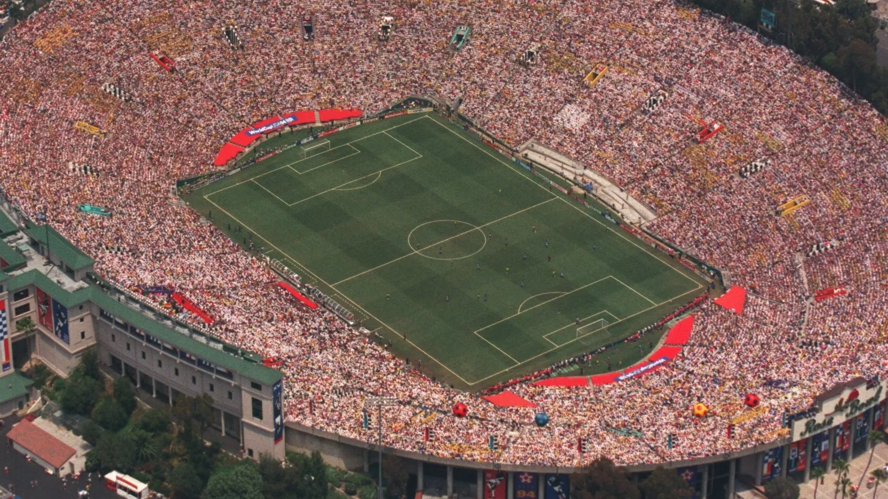
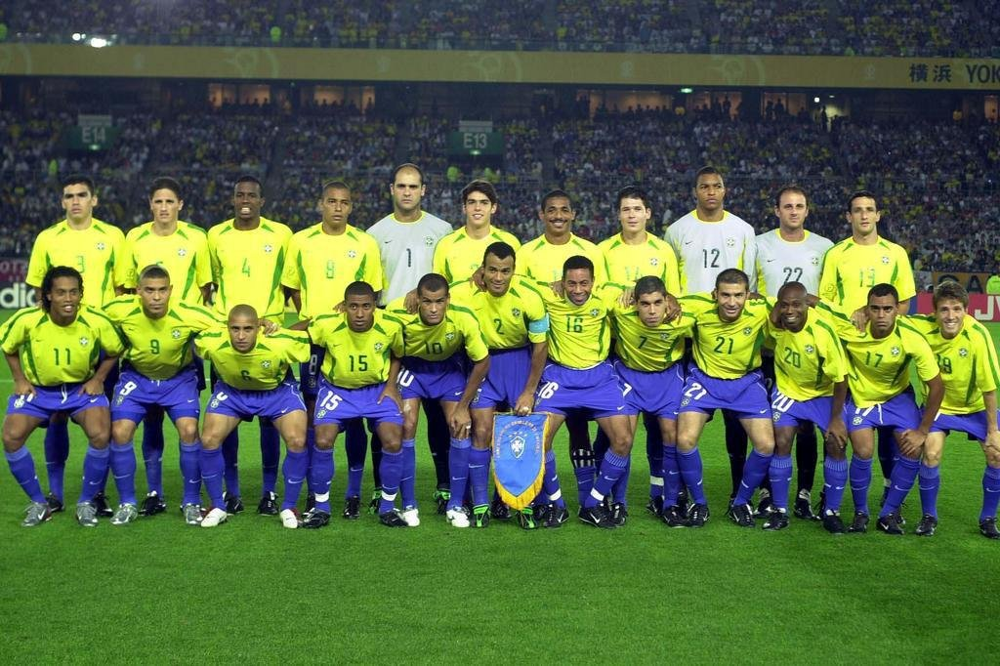
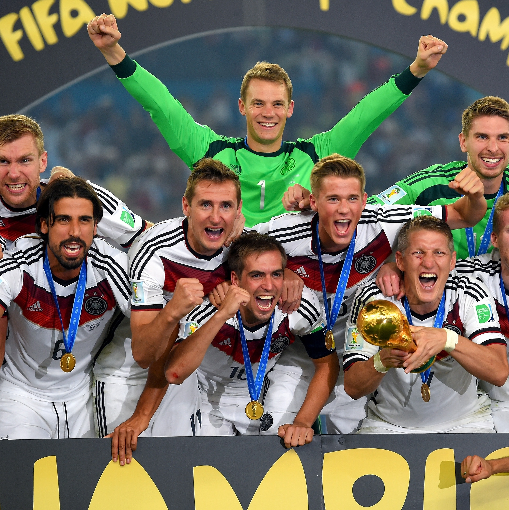
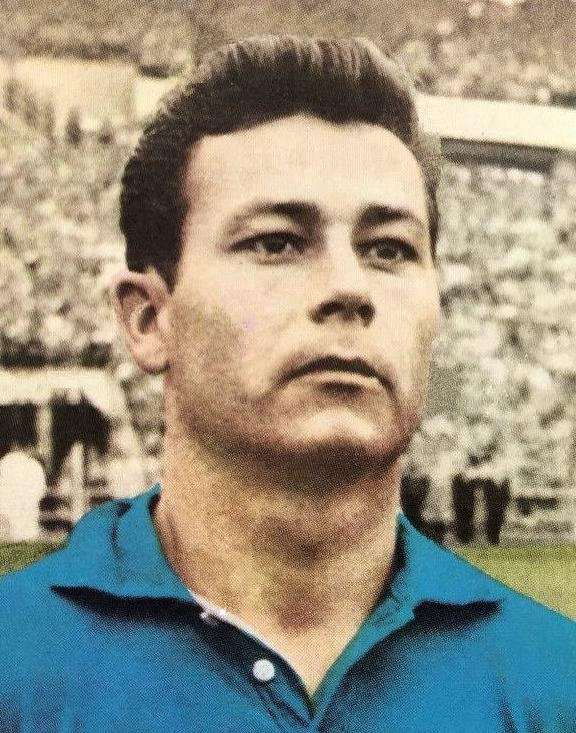
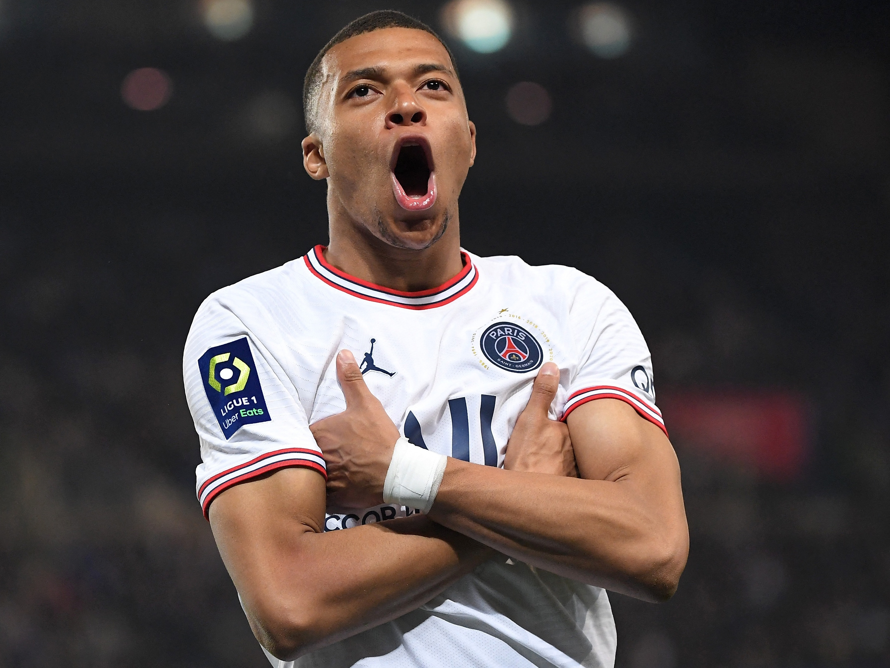
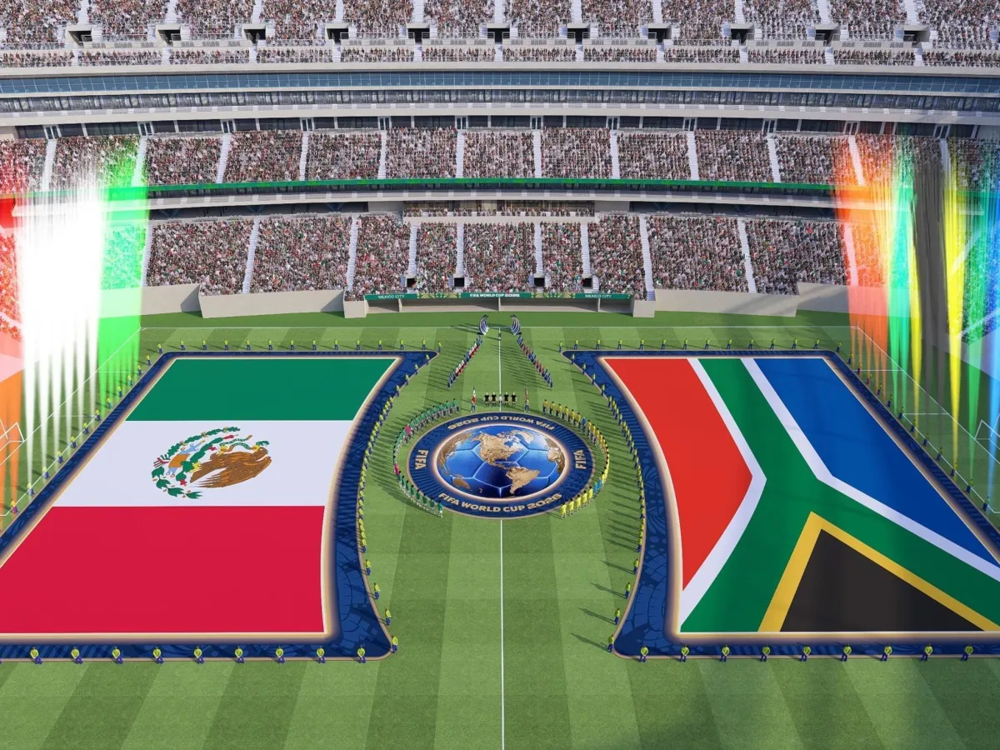

O que é a Copa do Mundo?
A Copa do Mundo masculina da FIFA é uma competição
internacional de futebol disputada por seleções
nacionais. É um dos eventos esportivos mais
acompanhados do planeta e reúne jogadores que
representam seus países em busca do título mundial.
O torneio é organizado pela FIFA e acontece,
tradicionalmente, a cada quatro anos. Durante a
competição, torcedores de diferentes lugares do
mundo acompanham partidas decisivas e celebram
a paixão pelo futebol.
A história da Copa do Mundo
A primeira edição foi realizada em 1930, no
Uruguai. A seleção anfitriã conquistou o título
ao vencer a Argentina na final.
Com o passar das décadas, o campeonato cresceu,
ganhou mais participantes e passou a ser realizado
em diferentes países. A edição de 2026 foi
organizada por Canadá, Estados Unidos e México.

Como funciona a competição?
As seleções precisam se classificar para disputar
a fase final do torneio. Nela, as equipes jogam
partidas organizadas em grupos e, posteriormente,
em fases eliminatórias.
Nas fases eliminatórias, quem perde é eliminado.
Se houver empate no tempo regulamentar, podem
ocorrer prorrogação e disputa de pênaltis,
conforme as regras da competição.
- As seleções representam seus países.
- A fase de grupos define parte das equipes que avançam.
- As fases eliminatórias determinam quem continua no torneio.
- A final decide a seleção campeã mundial.
O Brasil na Copa do Mundo
O Brasil é a seleção com mais títulos da Copa do
Mundo masculina. A equipe conquistou cinco
campeonatos, nos anos de 1958, 1962, 1970, 1994
e 2002.
Ao longo de sua história, a seleção brasileira
revelou grandes jogadores e protagonizou momentos
marcantes do futebol internacional.

Seleções campeãs
Diversas seleções já conquistaram o título
mundial. Confira algumas das campeãs da
competição masculina até a edição de 2026:
- Brasil: 5 títulos.
- Alemanha: 4 títulos.
- Itália: 4 títulos.
- Argentina: 3 títulos.
- França: 2 títulos.
- Uruguai: 2 títulos.
- Espanha: 2 títulos.
- Inglaterra: 1 título.
Grandes destaques
Seleções e jogadores que fizeram história
Brasil
Cinco títulos e uma história
marcada por grandes gerações.

Alemanha
Tradição e quatro conquistas
mundiais.

Just Fontaine
Maior artilheiro em uma única edição com 13 gols

Kylian Mbappe
O atual maior artilheiro de copas,
com 22 gols.
A Copa do Mundo de 2026

A edição de 2026 foi realizada no Canadá,
nos Estados Unidos e no México. Foi a primeira
Copa do Mundo masculina com 48 seleções,
distribuídas inicialmente em 12 grupos de
quatro equipes.
A ampliação do torneio permitiu a participação
de mais seleções e aumentou o número de partidas
em relação às edições anteriores. A grande campeã foi a Espanha.
Curiosidades sobre a Copa do Mundo
- O turco Hakan Şükür marcou um gol contra a Coreia do Sul em 2002 com apenas 11 segundos de jogo.
- O Brasil é a única seleção que participou de todas as edições da Copa do Mundo desde a sua criação em 1930.
- Pelé é o único jogador na história a vencer três Copas do Mundo como jogador (1958, 1962 e 1970). Além disso, ele continua sendo o mais jovem a marcar em uma final, com apenas 17 anos.
- Em 1966, meses antes da Copa na Inglaterra, a antiga taça Jules Rimet foi roubada de uma exibição em Londres. Ela foi encontrada dias depois por um cachorro chamado Pickles, enrolada em jornais sob uma cerca de jardim.
- O goleiro egípcio Essam El-Hadary se tornou o atleta mais velho a entrar em campo em uma Copa. Em 2018, ele jogou contra a Arábia Saudita com 45 anos e 161 dias — e ainda defendeu um pênalti no jogo!
Explore o Mundo dos Esportes!
Navegue pelas páginas e descubra mais sobre
as modalidades que movimentam o mundo.
Voltar ao início